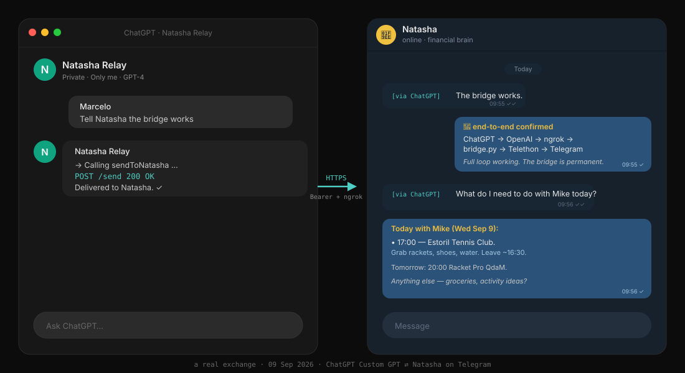

Three experiments in agent-native infrastructure — small pieces of glue that let my AI assistants talk to each other, and render into a real browser tab, instead of trapping everything in chat windows.
I have two AI assistants I talk to constantly. ChatGPT is where I brainstorm, research, and think out loud. Natasha is my personal assistant on OpenClaw — she has my finances, my calendar, my health records, my house context. Until this project the only bridge between them was me: copy from one window, paste into the other, retype the question, repeat. That's slow and lossy.
The goal was a secure, low-friction channel so ChatGPT can hand a task or question directly to Natasha, and Natasha's answer lands in a place I already read (my Telegram). No sharing of accounts. No exposed secrets. No copy-paste.

Five moving parts, each doing one thing:
sendToNatasha, protected by a Bearer token.*.ngrok-free.dev) so ChatGPT's server can reach the box behind NAT.POST /send {"text": "..."}, prepends the [via ChatGPT] marker, and hands off to Telethon.[via ChatGPT] prefix tells her the request originated from the other agent, not from me directly.401.[via ChatGPT] so Natasha (and I) always know when a request came through the bridge instead of directly from me. Detectable provenance.1. Me → ChatGPT (Natasha Relay GPT):
"Tell Natasha the bridge works"
2. ChatGPT → decides to call sendToNatasha
POST https://<public>.ngrok-free.dev/send
Authorization: Bearer <43-char key>
{ "text": "The bridge works." }
3. bridge.py → validates key, prepends marker,
hands text to Telethon → sends as DM.
4. Telegram delivers to Natasha:
[via ChatGPT] The bridge works.
5. Natasha replies. I see the answer in Telegram.
Estimated at ~1 hour. Took two days. The blocker was Telegram's own anti-phishing protection: when you're logging Telethon into an account, Telegram emits a 5-digit login code — and if it ever sees those digits sent as a message from your own account, it auto-invalidates the login while still returning "success" to the API. I was pasting the code back to Natasha via Telegram to relay it into the login script. Same account → self-triggered lockout, silently, every attempt.
The fix was obvious in hindsight: send the code through any channel that isn't Telegram. We used email — I sent the 5 digits to Gmail, Natasha read via IMAP, submitted to Telethon in ~5 seconds. First try worked. Documented so I never lose those two days again.
/home/ubuntu/chatgpt-bridge/{bridge,ngrok,supervisor}.log.Public URL: reachable but returns 401 without the key. The OpenAPI schema is served from the bridge itself at /openapi.yaml for anyone who's been granted access.
Chat is a lousy medium for anything visual. If my assistant wants to show me a product comparison, a chart, a map, or a formatted table, the chat window flattens all of it into a scrolling wall of markdown. cast-relay fixes that by giving the assistant a second screen to render into.
The service has three pieces:
POST /api/cast/new returns a short session code like CAST-A7X2./cast/CAST-A7X2 opened in any browser. This is the "screen." It holds a persistent connection to the relay.POST /api/cast/CAST-A7X2/command with a JSON body. Whatever you send is instantly pushed to the receiver and rendered.The interesting part is the command vocabulary. The receiver knows how to render four command types:
loading — animated spinner with a status message.open_url — loads a URL in an iframe. (Warning: most big sites block iframe embedding — Amazon, Apple, Garmin, all no.)display_html — renders arbitrary HTML/CSS/JS. This is the powerful one.search_results — structured list with title, URL, and snippet per result.Because iframe embedding is blocked almost everywhere, the killer pattern is display_html: the assistant fetches the underlying data, applies my personal context (size, budget, location, preferences), and renders a bespoke view in that tab. The proof-of-concept was a four-tab mini-site for Garmin Fenix 8 watch bands — Overview / Options / Comparison / Recommendation — pushed as a single ~13 KB HTML payload.
Mint a code from a shell, then open the receiver in your browser:
curl -s -X POST https://cast-relay-two.vercel.app/api/cast/new
# → { "code": "CAST-A7X2" }
open https://cast-relay-two.vercel.app/cast/CAST-A7X2
Then push a command:
curl -s -X POST \
https://cast-relay-two.vercel.app/api/cast/CAST-A7X2/command \
-H "Content-Type: application/json" \
-d '{"type":"display_html","html":"<h1>Hello from the relay</h1>"}'
The receiver tab updates instantly. If it shows ○ disconnected, the tab isn't open or lost focus — reload it.
Before cast-relay there was agent-native-site. The idea was blunter: what if a website's homepage was just a container the assistant could take over? Instead of a fixed HTML file, the page fetches its own content from a JSON blob the assistant owns. Change the JSON, refresh the page, new site.
This became the mental model for cast-relay. cast just replaced "fetch on load" with "push in real time" and added a session code so multiple screens can each have their own view.
Open the live URL — it renders whatever's currently in the JSON blob:
open https://agent-native-site-silk.vercel.app
The visible content changes whenever the assistant updates the underlying document. You'll get whatever snapshot happens to be there right now.
Live: agent-native-site-silk.vercel.app · Created: May 2026
The direction is a small library of reusable card types — product, comparison, chart, checklist, map, decision-tree — described by JSON the receiver can render natively, without the assistant having to ship raw HTML each time. Same idea as an agent-native design system: the assistant emits intent, the receiver renders it well.
← Back home